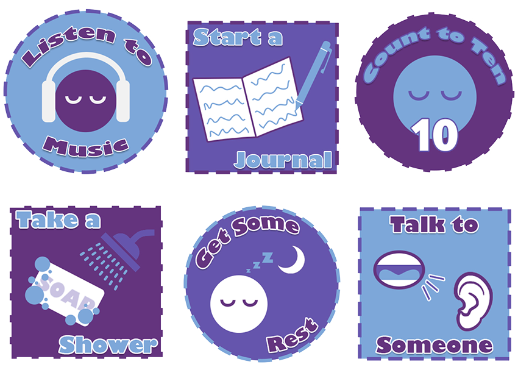
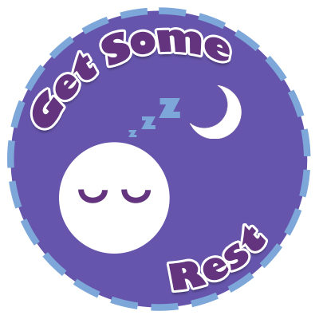

Self-Care Achievement Badges
- Medium: Digital Graphic, Animated GIF
- Date: Fall 2022
- Programs Used: Adobe Illustrator, Photoshop

These badges were created with the inspiration of video game achievements in mind. To encourage more positive behavior in regards to bettering mental health, short animations begin when hovering over the badges. In order to further the badges being shown as a set, a set color palette and typeface were chosen. Brightly colored bold letters suggest a tone of fun while still having a gentle feel for the topic of mental health at hand.
Using Photoshop for animation, individual elements move at varying speed to create a bit more sense of life into the animations. These are all real self-care tips that I utilize to help better myself, so a main objective for these badges was to potentially help someone else who may be struggling.